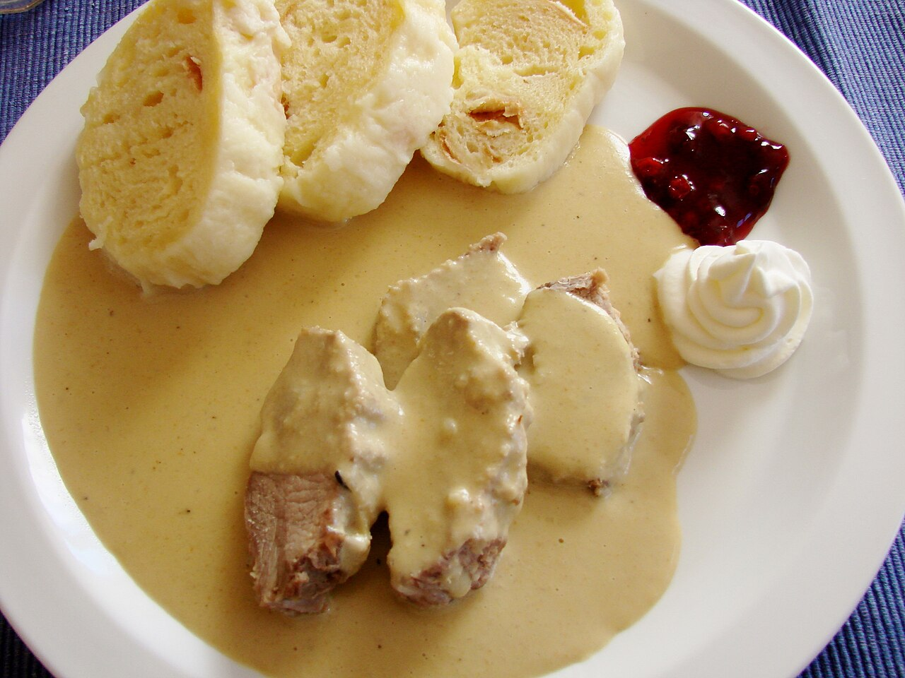
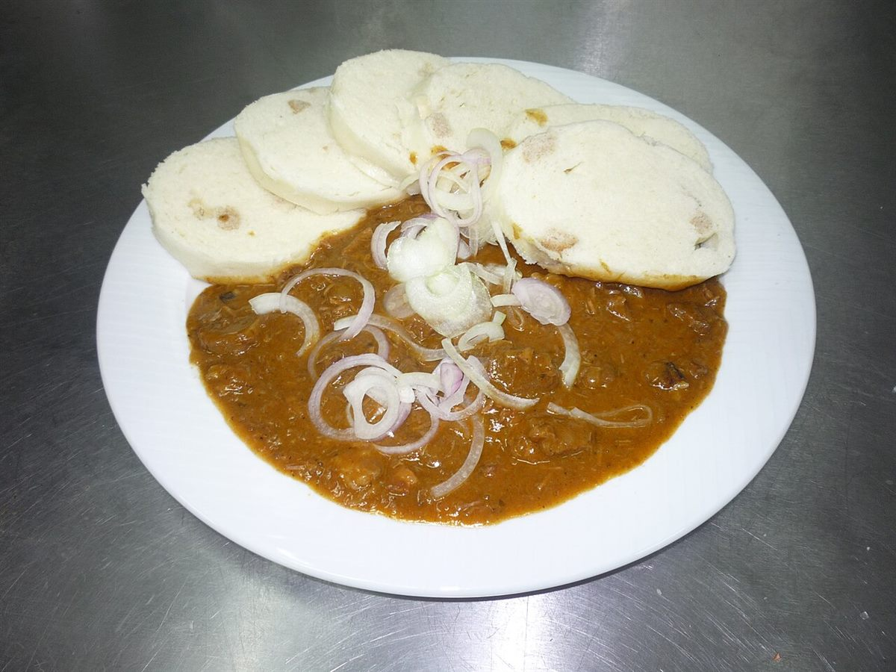
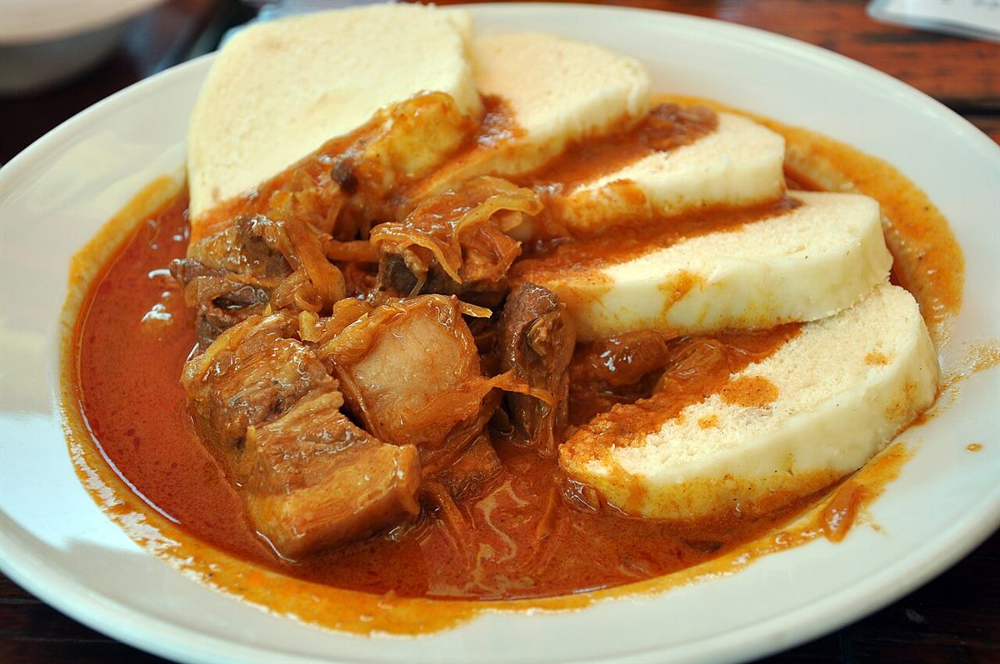
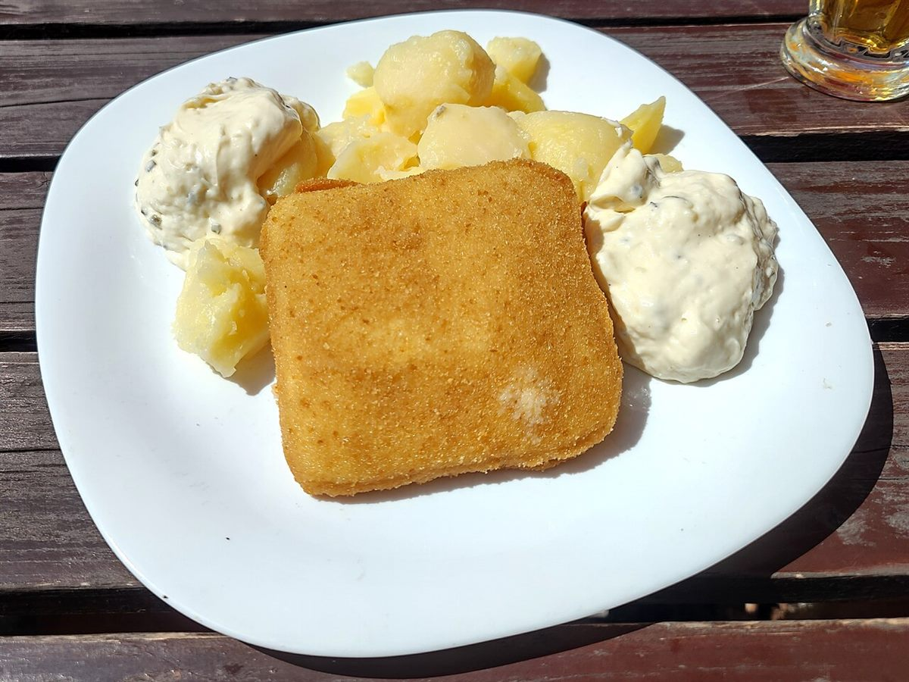
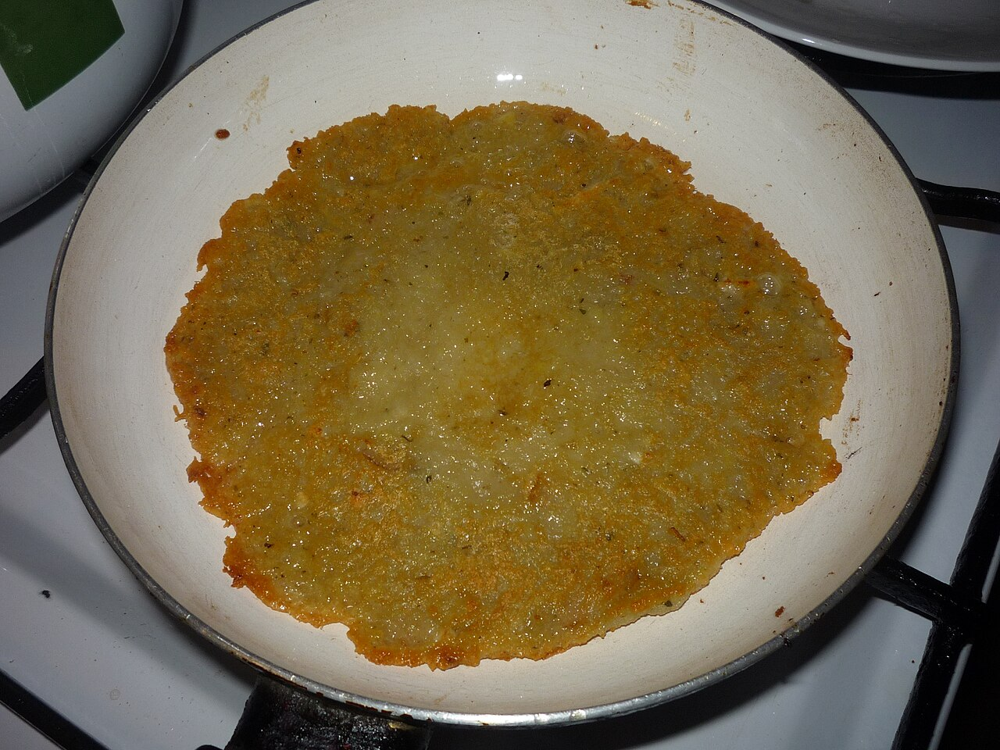
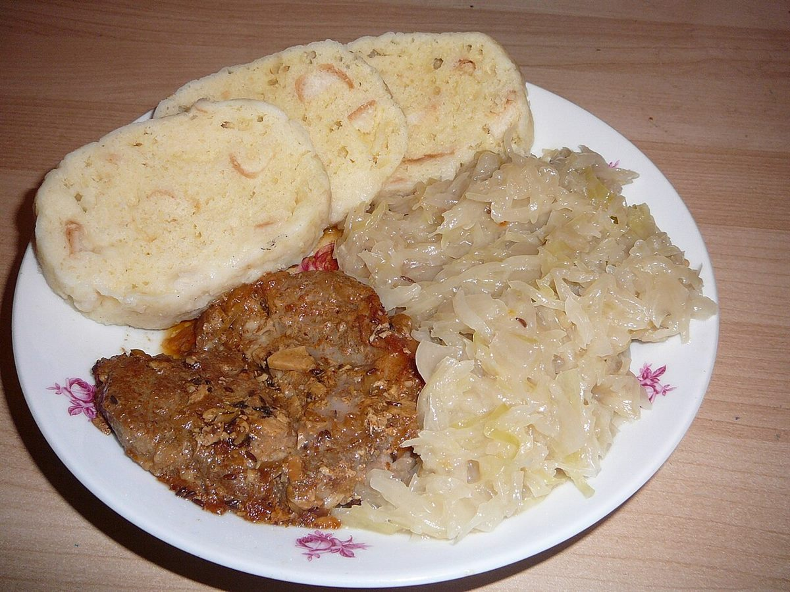
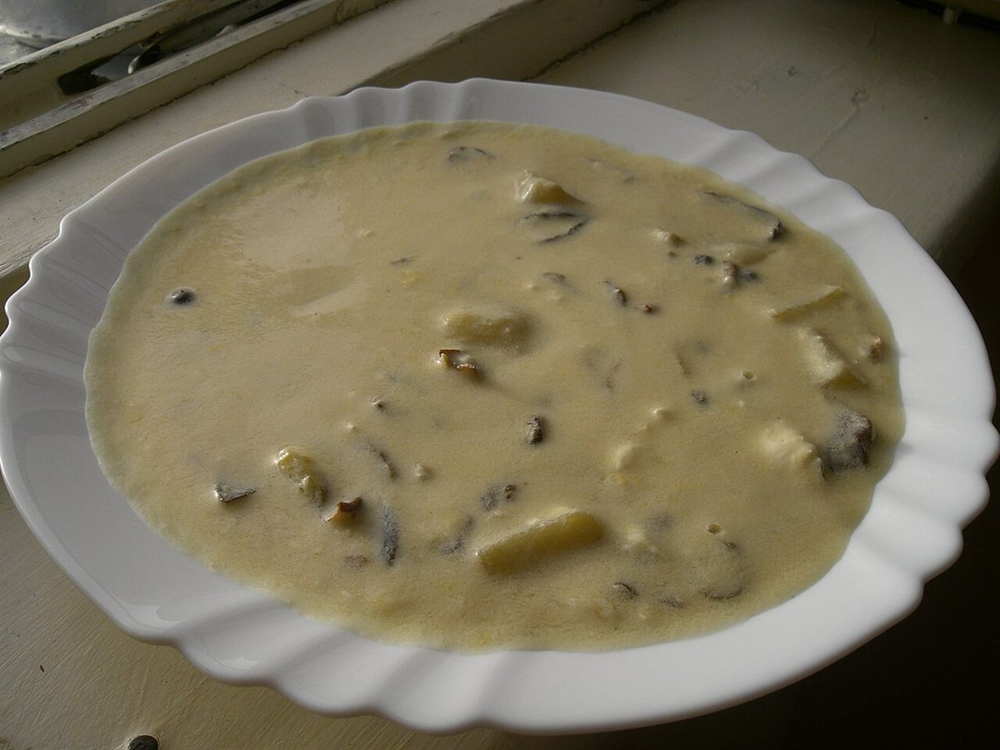
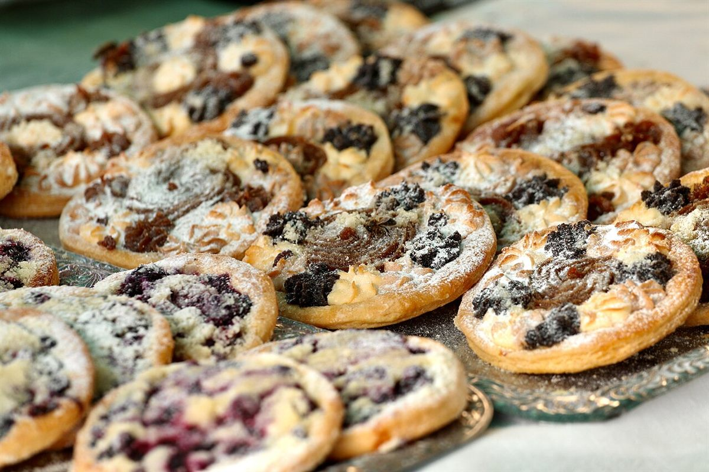
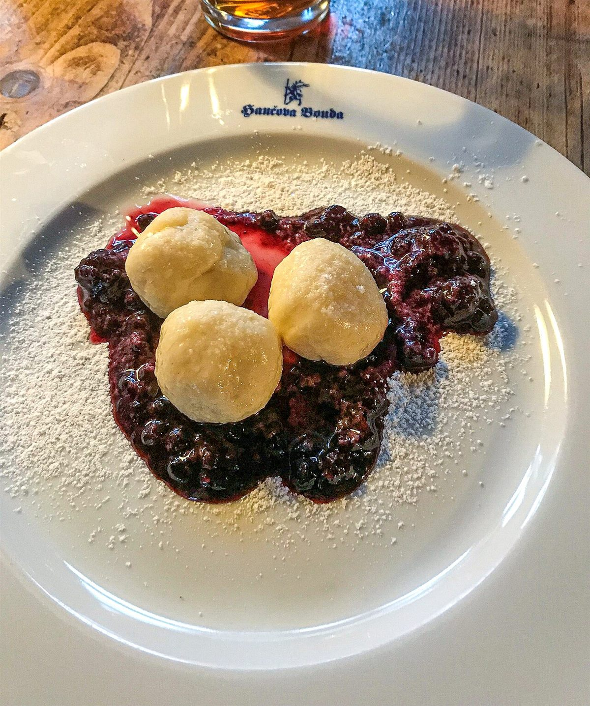

대표 음식 9종
사진은 Wikimedia Commons에 공개된 실제 촬영본이며, 저작자와 라이선스를 각 사진 아래에 적었습니다. 촬영한 식당·지역·조리법에 따라 실제 모습은 다를 수 있습니다.
-

사진: Matyáš Havel · CC BY-SA 3.0 · Wikimedia Commons 스비치코바Svíčková na smetaně
뿌리채소를 끓여 만든 부드러운 크림소스에 소고기를 담고 빵 크네들리키·링곤베리 등을 곁들이는 대표 요리.
자세히 보기
- 주재료
- 소고기, 당근, 셀러리, 파슬리 뿌리, 크림, 향신료
- 맛과 식감
- 부드러운 소스에 은은한 단맛·새콤함
- 현지 식문화
- 일상 식당 메뉴에서부터 가정 행사 음식까지 폭넓게 즐긴다.
출처: visitczechia.com
-

사진: Pohled 111 · CC BY-SA 4.0 · Wikimedia Commons 크네들리키Knedlíky
체코 요리에서 고기·소스와 함께 내는 찐 반죽 요리. 빵·감자·과일 등 재료와 용도에 따라 종류가 달라진다.
-

사진: Rkolarsky · CC BY-SA 3.0 · Wikimedia Commons 체코식 굴라시Český guláš
헝가리 요리에서 영향받은 파프리카 풍미의 소고기 스튜로 체코식은 비교적 걸쭉하고 빵 크네들리키와 자주 먹는다.
자세히 보기
- 주재료
- 소고기, 양파, 파프리카, 캐러웨이
- 맛과 식감
- 진한 육향과 파프리카 향
- 현지 식문화
- 헝가리식 굴야시 수프와 비교 카드 만들기 좋다.
출처: visitczechia.com
-

사진: Ladislav Boháč · CC BY-SA 4.0 · Wikimedia Commons 스마제니 시르Smažený sýr
치즈에 빵가루 옷을 입혀 바삭하게 튀겨 감자튀김이나 타르타르소스와 함께 내는 음식.
자세히 보기
- 주재료
- 에담 치즈 등, 밀가루, 달걀, 빵가루
- 맛과 식감
- 바삭한 표면과 녹는 치즈
- 현지 식문화
- 채식 선택지로도 소개되나 식당별 치즈 성분은 확인해야 한다.
출처: visitczechia.com
-

사진: Pohled 111 · CC BY-SA 4.0 · Wikimedia Commons 브람보라크Bramborák
간 감자에 마늘·마조람 등을 섞어 부친 체코식 감자전.
-

사진: Pavel Ševela · CC BY-SA 3.0 · Wikimedia Commons 베프쇼·크네들로·젤로Vepřo knedlo zelo
구운 돼지고기·크네들리키·양배추를 한 접시에 내는 전형적인 가정식 조합.
자세히 보기
- 주재료
- 돼지고기, 빵 반죽, 양배추, 캐러웨이
- 맛과 식감
- 구운 고기 풍미와 새콤한 양배추
- 현지 식문화
- 세 가지 이름이 합쳐진 음식명이라는 점이 언어 콘텐츠와 연결된다.
출처: visitczechia.com
-

사진: Chmee2 · CC BY-SA 3.0 · Wikimedia Commons 쿨라이다Kulajda
감자·버섯·딜을 중심으로 크림과 달걀을 넣는 향긋한 수프.
-

사진: VictoriaRomarniuc · CC BY-SA 4.0 · Wikimedia Commons 콜라체Koláče
둥근 반죽 위에 양귀비씨·치즈·과일 등을 얹은 달콤한 구운 빵과자.
-

사진: VitVit · CC BY-SA 4.0 · Wikimedia Commons 과일 크네들리키Ovocné knedlíky
과일을 반죽으로 감싸 익힌 뒤 버터·치즈·설탕·양귀비씨 등과 함께 내는 달콤한 음식.
자세히 보기
- 주재료
- 딸기·살구·자두, 반죽, 버터, 설탕
- 맛과 식감
- 과일의 산미와 단맛
- 현지 식문화
- 체코식 크네들리키가 단맛 디저트로도 쓰인다는 점을 보여준다.
출처: visitczechia.com
함께 알아두면 좋은 점
- 이웃 나라와 비교: 체코식 굴라시 ↔ 헝가리 굴야시; 체코 크네들리키 ↔ 헝가리 노케들리. - 알레르기·식단: 성분과 조리법은 식당·가정마다 달라 일반화할 수 없습니다. 알레르기나 식단 제한이 있다면 주문 전에 직접 확인하세요.